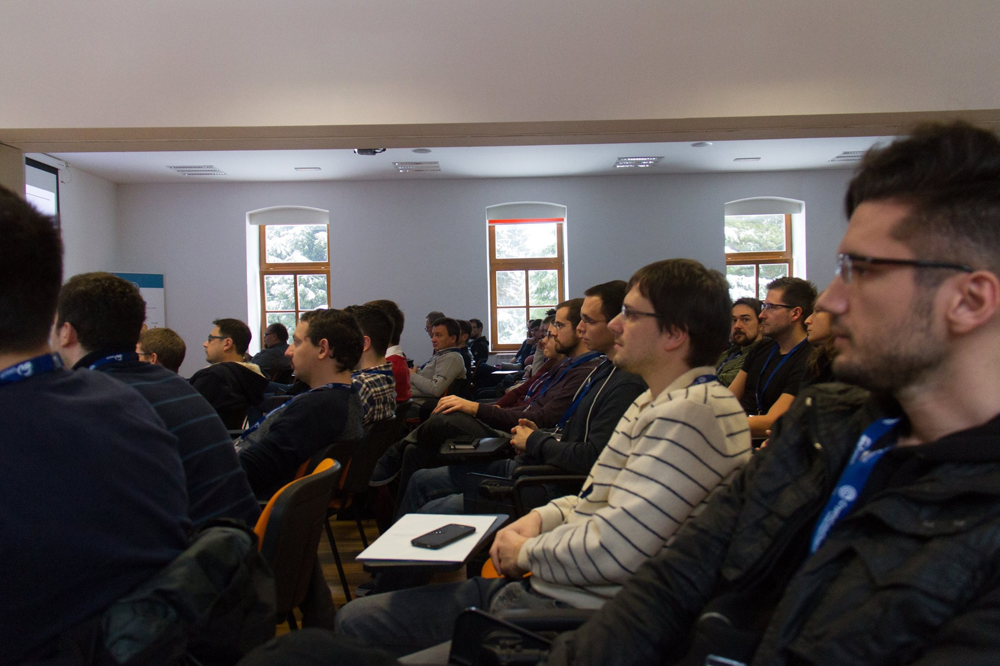
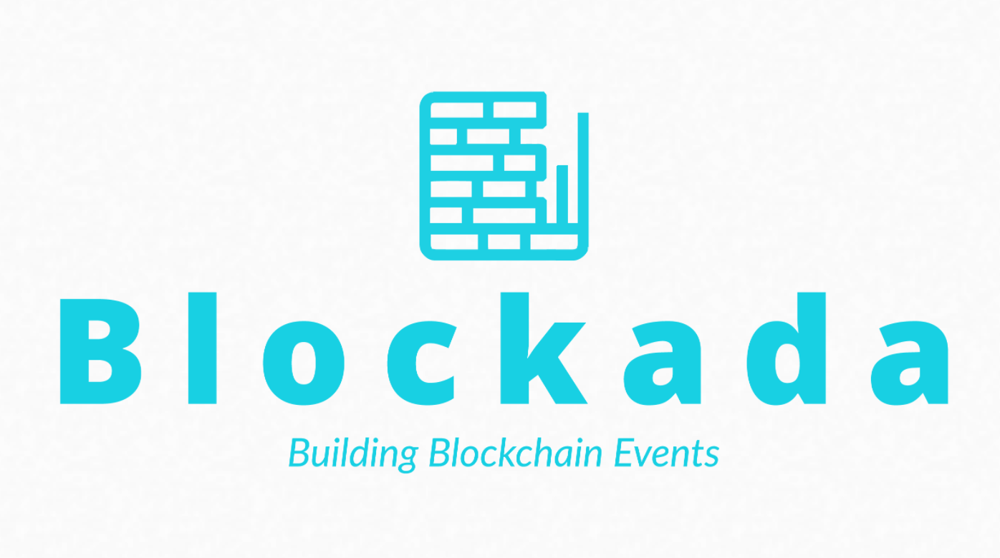
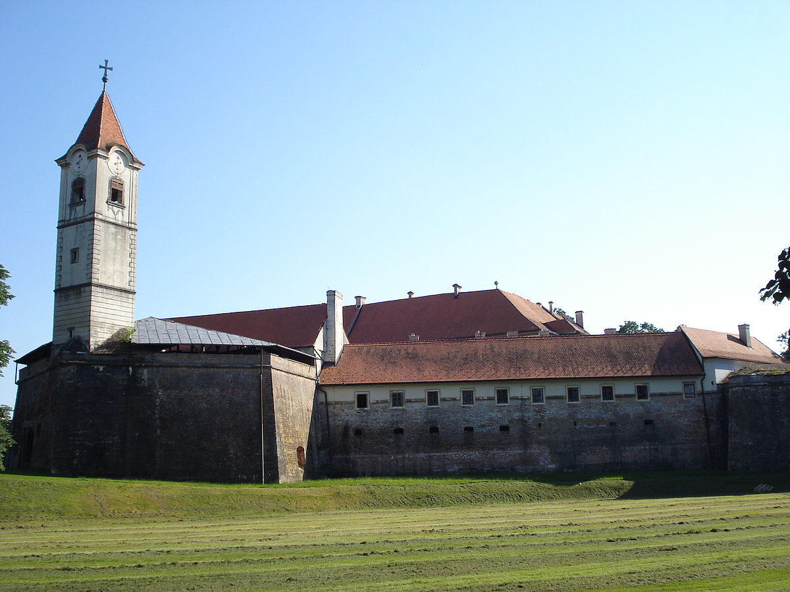
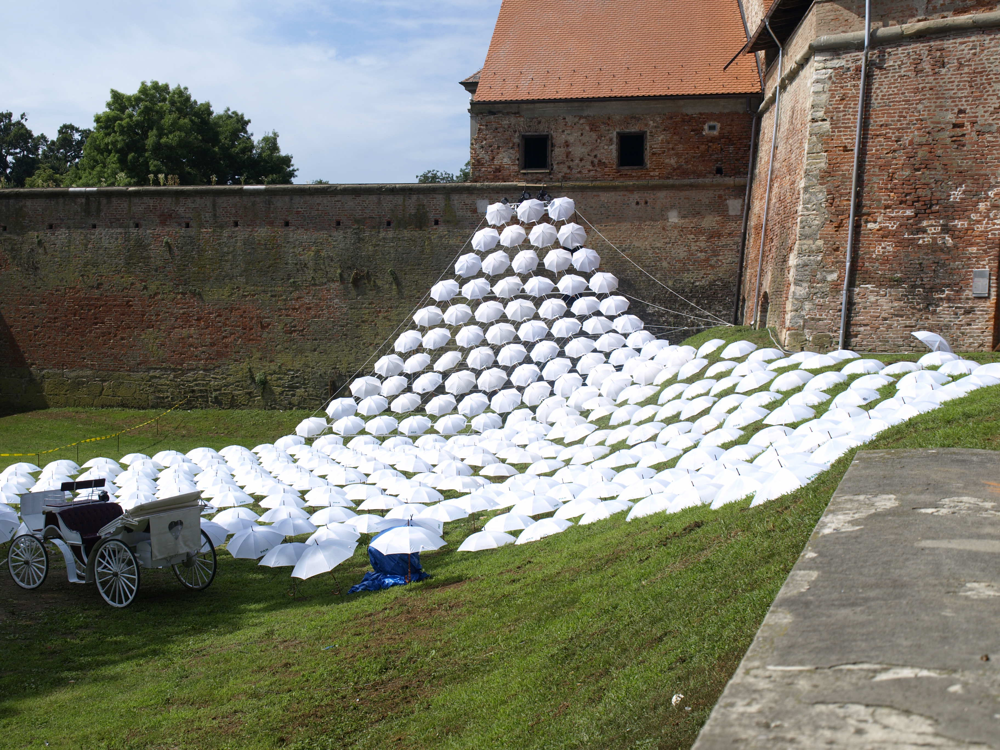

Bločk started in 2017 as Croatia's very first blockchain developer conference. Some meetups had happened earlier but nothing hands-on had yet been organized. Inspired by the practical nature of Web Summer Camp, Bločk was organized to be Croatia's first entirely technical no-market-talk no-speculation conference. The first edition was humble - four speakers in the morning and a workshop in the afternoon - but the interest demonstrated by the community turned the conference into a franchise we intend to keep alive for a long time to come.
Bločk is organized by Blockada, a non-profit NGO we formed to lead two of Croatia's main blockchain events: Blocksplit and Bločk. Blockada has a full time employee and was formed by the founders of Blocksplit and Bločk. The full list of team members is available on Blockada's home page.
If you'd like to support this effort, we have an open call for general sponsors over at Blockada's blog. The sponsorship grants will go directly towards Blockada's employee's salary and building the best possible hackathons and events for the blockchain space.
The town of Čakovec, pronounced Chaktovetz, has a long and dynamic past. It's located at the North of Croatia between Hungary and Slovenia. A marshland, a military post and a legionnaire camp in the past, it is now home to a long abandoned castle turned museum which - coincidentally - will be where Bločk will take place. 
A small town away from the capitol, Čakovec lacks the high-tech incentive of the rest of the country. Bločk is our attempt to bring high tech back to the North, and to increase the bond without our neighbor countries. We are turning Međimurje - the county Čakovec is the county seat of - into the "triangle of tech" by fostering connections with the remainder of Europe and breaking the tech cocoon of Zagreb. 